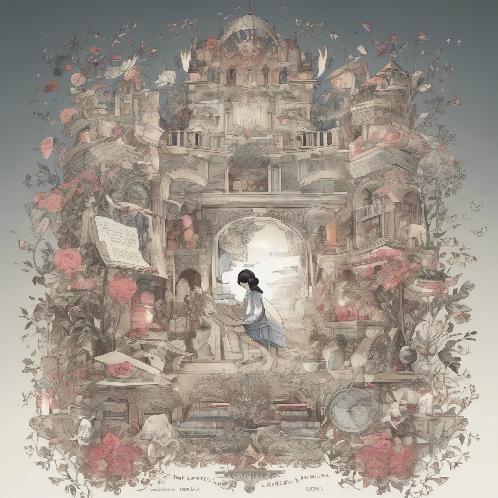
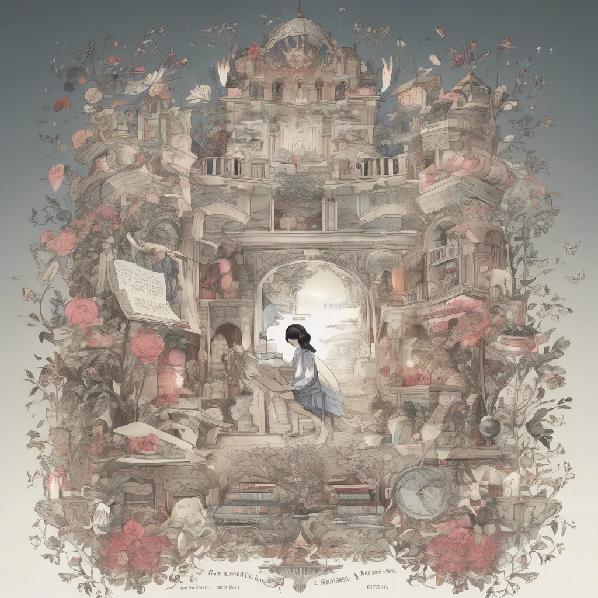

.png) 

مميزات موقعنا
تحويل الكتب إلى صوت
حوّل أي كتاب نصي إلى صوتي بسهولة واستمتع بتجربة استماع ممتعة!
أصوات متعددة وتحكم في السرعة
اختر من بين مجموعة من الأصوات، واضبط سرعة القراءة حسب رغبتك!
تحميل كتبك واستمع إليها في أي مكان
استمع إلى كتبك في أي وقت دون الحاجة إلى القراءة المطولة.
فوائد الأستماع للكتب الصوتية
راحة العين وتقليل الإجهاد البصرك
بدلاً من التحديق في الشاشة لساعات، يمكنك الاستماع إلى الكتب بسهولة، مما يساعد على تقليل إجهاد العين ويوفر تجربة أكثر راحة أثناء القراء
أ توفير الوقت والاستفادة من أوقات الفراغ
ااستمع إلى كتبك المفضلة أثناء القيادة، التمارين الرياضية، أو أداء المهام اليومية، مما يساعدك على استثمار وقتك بشكل أفضل.
تتحسين التركيز والاستيعاب
االدراسات أظهرت أن الاستماع يساعد على تحسين التركيز والفهم، مما يجعل التعلم أكثر فعالية، خاصة عند الاستماع بصوت واضح ومؤثر.
تجربة قراءة مريحة لضعاف البصر والمكفوفين
ا يتيح الموقع للأشخاص الذين يعانون من مشاكل بصرية الوصول إلى الكتب بسهولة عبر الصوت، مما يجعل القراءة متاحة للجميع.
تحسين مهارات الاستماع والخيال
الاستماع إلى الكتب يساعد على تنشيط الخيال وتحفيز الدماغ، مما يجعله تجربة ممتعة ومفيدة في نفس الوقت.
تجربة استماع مريحة وعالية الجودة
يوفر أداءً صوتيًا عالي الجودة يجعل التجربة ممتعة وسلسة، مما يتيح لك الانغماس في عالم الكتب بكل راحة.